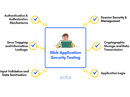
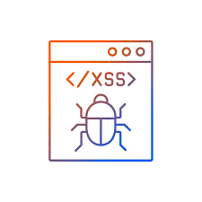
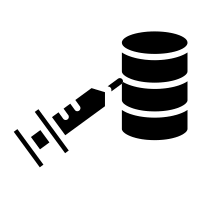

Common Web Application Vulnerabilities
Web applications may face a number of attack types depending on the attacker’s goals, the nature of the targeted organization’s work, and the application’s particular security gaps. Common attack types include:
-

Cross site scripting (XSS)
XSS is a vulnerability that allows an attacker to inject client-side scripts into a webpage in order to access important information directly, impersonate the user, or trick the user into revealing important information.
-

SQL Injection (SQi)
SQi is a method by which an attacker exploits vulnerabilities in the way a database executes search queries. Attackers use SQi to gain access to unauthorized information, modify or create new user permissions, or otherwise manipulate or destroy sensitive data.
-
Cross-site request forgery (CSRF)
Cross site request forgery involves tricking a victim into making a request that utilizes their authentication or authorization. By leveraging the account privileges of a user, an attacker is able to send a request masquerading as the user. Once a user’s account has been compromised, the attacker can exfiltrate, destroy or modify important information. Highly privileged accounts such as administrators or executives are commonly targeted.
Secure Coding Best Practices
Protecting and securing code to industry standards is extremely challenging to achieve. Here are the top secure code best practices to defend your workload against compromise.
-

Visibility and Monitoring
Without secure coding protection, it’s extremely difficult to know exactly what data is saved to a code repository. Automated detection monitoring scans the repository looking for vulnerabilities and if any issues are encountered, alerts are triggered ready for triaging. Map and monitor hidden sensitive assets, codebases, logs, and other sensitive intellectual property that may be left exposed to public facing repositories.
Security Automation: Automated secret detection eliminates the painstaking and repetitive process of having to manually search for code security vulnerabilities. Automated engines scan the repo using ML trained detectors to improve success rates, and pre-commit checks will identify issues before the code is committed to source control. -
Logs and Alerts
Secrets can unintentionally be included in log entries, therefore automated protections should target logs. Additionally, it’s critical to ensure verbose logging is enabled locally for custom applications, making it possible to monitor out-of-sight assets, but never check into the code repository.
-
Block Reflected XSS
Protecting against non-persistent or reflected XSS attacks prevents malicious scripts being committed into source control. In turn, this protects users against the execution of targeted malicious HTML or JavaScript.
-
Mitigate Misconfiguration
Human error and mistakes are an inevitability of coding, and secure coding best practices demand the ability to remediate any issues rapidly. Security lapses should be fixed immediately and all traces removed from the history of the repo.
-
Protecting Secrets and Data
Secure coding protects against secrets and business data from leaking into the public domain. This includes passwords, API keys, Tokens, Credentials, PCI, PII, and PHI data. The solution should meet these OWASP recommendations as standard: 2017 – Broken Authentication, 2017 – Sensitive Data Exposure, 2017 – Broken Access Control, 2017 – Security Misconfiguration.
-
Harnessing the Power of AI/ML
The scope of threats is immense, simplifying the task by using AI/ML datasets to train detectors to automatically identify both known and unknown code security risks.